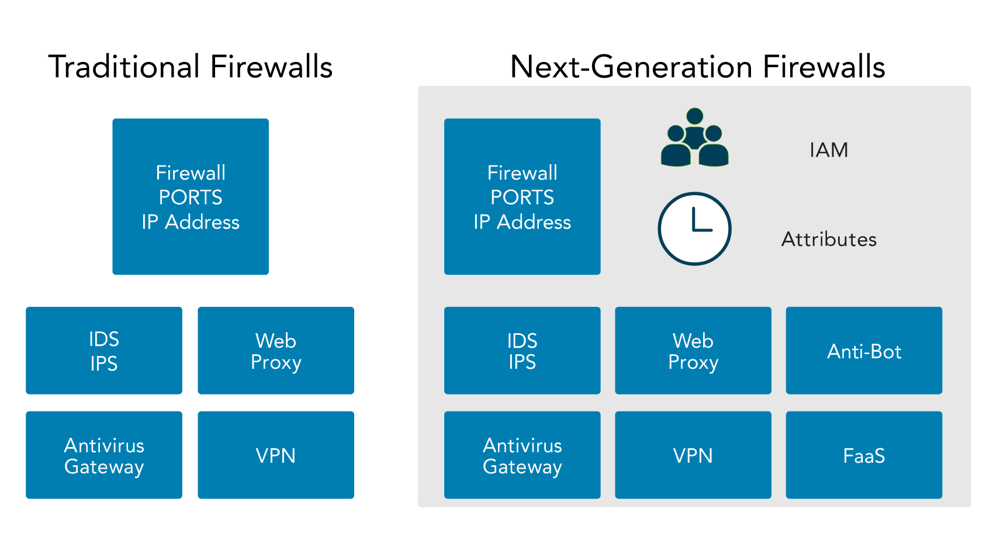

#
4.2 Understand Network (cyber) threats and attacks
#
Podcast Summary
- Host and Guest: Chad Kliewer, holder of CISSP and CCSP certifications, and Joe Sullivan, CISSP, former CISO in the banking and finance industry, specialized in forensics, incident response, and recovery.
- Focus: The discussion centers on cyberattacks, their impact on businesses, and methods to prevent and detect them.
- SIEM for Actionable Intelligence: The use of Security Information Event Management (SIEM) systems is emphasized for detecting potential threats and indicators of compromise before actual breaches occur. Properly optimized SIEMs can pick up on activities like scanning, malicious email attachments, and web application enumeration, enabling early incident response actions.
- Cloud-Based Attacks: Cloud-based attacks present different challenges, including diverse threat surfaces and unique threat models. Cloud-based SIEMs or third-party services can still be used to detect and respond to attacks in the cloud environment.
- Supply Chain Attacks: The SolarWinds attack is discussed as a significant supply chain attack. Malicious code was embedded within a software update package, and the attackers utilized multiple cloud providers to evade detection.
- Threat Hunting vs. Pen Testing: The differences between threat hunting, penetration testing, and vulnerability scanning are explained. Threat hunting involves proactively looking for indicators of compromise and shortening the attack dwell time, while penetration testing aims to assess network vulnerabilities and improve security measures.
- PCI DSS: The T.J. Maxx incident is mentioned as one of the events that led to the development of the Payment Card Industry Data Security Standards (PCI DSS). PCI DSS is not a law but a contractual obligation between organizations and credit card companies to protect credit card data and maintain secure practices.
Overall, the discussion stresses the importance of implementing fundamental security practices, such as asset inventory, network segmentation, logging, monitoring, patch management, and vulnerability scanning, to protect against cyberattacks and data breaches. (Summarized from Transcription by ChatGPT)
#
Types Of Threats
#
Steps to Protect Networks
There is no silver bullet in cyber security that can protect against all types of attacks. However, there are fundamental steps that can be taken to improve network security and provide a solid base of defense against a multitude of cyber threats. Here are a few examples:
Disable Unnecessary Services and Protocols If a system doesn’t need a particular service or protocol, it should not be running. Attackers cannot exploit a vulnerability in a service or protocol that isn’t running on a system.
Use Firewalls Firewalls can prevent many types of attacks. There are two main types of firewalls:
- Network-based firewalls protect entire networks.
- Host-based firewalls protect individual systems.
#
Intrusion Detection System (IDS)
An intrusion occurs when an attacker bypasses or subverts security mechanisms and gains access to an organization’s resources. Intrusion detection involves monitoring recorded information and real-time events to identify abnormal activity that suggests a potential incident or intrusion.
An Intrusion Detection System (IDS) automates the examination of logs and real-time system events to identify intrusion attempts and system failures.
#
Role of IDS
- IDS forms part of a multi-layered security strategy, complementing other security mechanisms such as firewalls.
- IDS can recognize attacks from external sources, like the internet, and internal threats like a malicious worm.
- Once a suspicious event is detected, IDS responds by sending alerts or raising alarms.
- The primary goal of an IDS is to facilitate a timely and accurate response to intrusions.
#
Types of IDS
Intrusion detection systems are generally classified into two types:
#
Host-Based IDS (HIDS)
- It monitors elements such as process calls and information recorded in system, application, security, and host-based firewall logs.
- It can examine events in greater detail compared to a Network-based Intrusion Detection System (NIDS), allowing it to identify specific files that may be compromised during an attack.
- It can also track the processes employed by an attacker.
#
Advantages
- A HIDS can detect anomalies on the host system that a NIDS might miss. For example, it can detect infections where an intruder has infiltrated a system and is controlling it remotely.
#
Disadvantages
- HIDSs are more costly to manage than NIDSs because they require individual administration on each system, whereas NIDSs typically support centralized administration.
- A HIDS cannot detect network attacks on other systems.
#
Network-Based IDS (NIDS)
- It has the ability to monitor traffic details, however, it cannot monitor the content of encrypted traffic.
- Remote sensors can be used by a single NIDS to collect data at crucial network locations, sending this data to a central management console.
- These sensors can monitor traffic at various network hardware such as routers, firewalls, and network switches that support port mirroring, as well as other types of network taps.
#
Advantages
- A NIDS has minimal impact on overall network performance and, when deployed on a dedicated system, it does not affect performance on any other computer.
- It is typically capable of detecting the initiation of an attack or ongoing attacks.
#
Disadvantages
- It may not always provide information about the success of an attack.
- It may not know if an attack has affected specific systems, user accounts, files, or applications.
#
Security Information and Event Management (SIEM)
Security Information and Event Management (SIEM) is a technology that helps in managing security by using tools that collect information about the IT environment from many disparate sources. The goal is to better examine the overall security of the organization and streamline security efforts.
#
Role of SIEM
- SIEM solutions gather log data from various sources across the enterprise to better understand potential security concerns.
- These systems help in allocating resources appropriately, depending on the security needs.
- SIEM systems can work with other components as part of a defense-in-depth strategy, enhancing the overall information security program.
#
Preventing Threats
- Keep Systems and Applications Up-to-Date: Vendors regularly release patches to correct bugs and security flaws, but these only help when they are applied. Patch management ensures that systems and applications are kept up to date with relevant patches.
- Remove or Disable Unneeded Services and Protocols: If a system doesn’t need a service or protocol, it should not be running. Attackers cannot exploit a vulnerability in a service or protocol that isn’t running on a system.
- Use Intrusion Detection and Prevention Systems: Intrusion detection and prevention systems observe activity, attempt to detect threats and provide alerts. They can often block or stop attacks.
- Use Up-to-Date Anti-Malware Software: Various types of malicious code such as viruses and worms can be mitigated with up-to-date anti-malware software.
- Use Firewalls: Firewalls can prevent many different types of threats. Network-based firewalls protect entire networks, and host-based firewalls protect individual systems.
#
Antivirus
- The use of antivirus products is strongly encouraged as a security best practice and is a requirement for compliance with the Payment Card Industry Data Security Standard (PCI DSS).
- Several antivirus products are available and many can be deployed as part of an enterprise solution integrating with several other security products.
- Antivirus systems aim to identify malware either by recognizing the signature of known malware or detecting abnormal system activity.
- This identification process utilizes various types of scanners, pattern recognition, and advanced machine learning algorithms.
- Modern anti-malware solutions go beyond mere virus protection, aiming to provide a more comprehensive approach, including detection of rootkits, ransomware, and spyware.
- Many endpoint solutions also include software firewalls and Intrusion Detection Systems (IDS) or Intrusion Prevention Systems (IPS).
#
Firewalls
- The term 'firewall' is borrowed from the field of building construction or vehicle design, where it refers to a physical barrier that prevents the spread of fire from one area to another. In the context of computer security, firewalls act as a security measure to isolate network segments from each other.
- Firewalls enforce security policies by filtering network traffic based on a set of rules.
- Firewalls can manage traffic at Layers 2 (MAC addresses), 3 (IP ranges), and 7 (application programming interface (API) and application firewalls), but traditionally, they have been implemented to control traffic at Layer 4.

#
Intrusion Prevention System (IPS)
- An Intrusion Prevention System (IPS) is a special type of active IDS (Intrusion Detection System) that automatically attempts to detect and block attacks before they reach the target systems.
- The key distinguishing difference between an IDS and an IPS is that the IPS is placed in line with the traffic. This means that all traffic must pass through the IPS. After analyzing the traffic, the IPS can decide what to forward and what to block, thus preventing an attack from reaching its target.
- IPS systems are most effective at preventing network-based attacks. Therefore, it is common to see the IPS function integrated into firewalls.
- Just like IDS, IPS also have two variants: Network-based IPS (NIPS) and Host-based IPS (HIPS).